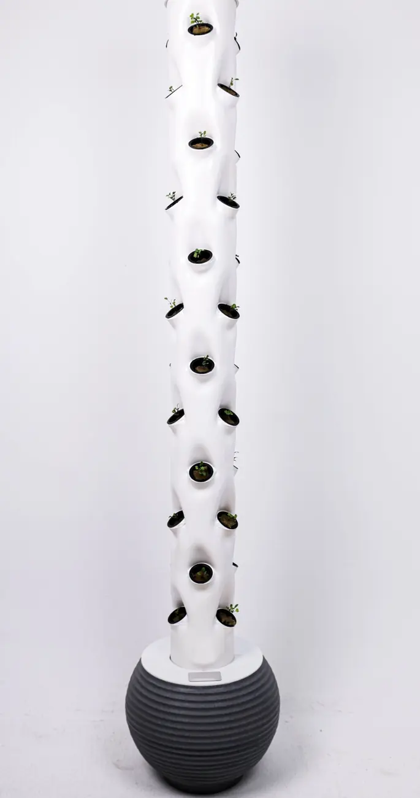
2 mالبرج الكبيرLarge tower
2 m ارتفاعheight36 نبتةplantsري آليauto irrigation
الباقة الكاملة: البرج + كل المستلزمات للبدء فوراًFull package: the tower plus everything you need to start
4,800 ج.مEGP
نصمّم ونطوّر مزارع حديثة بأنظمة زراعة متقدمة وتقنيات زراعية ذكية. أبراج زراعة هوائية تزرع فيها الخضار والورقيات في مساحة صغيرة وبمياه أقل.We design and develop modern farms with advanced growing systems and smart agricultural technologies. Our aeroponic towers grow vegetables and greens in a small space with far less water.
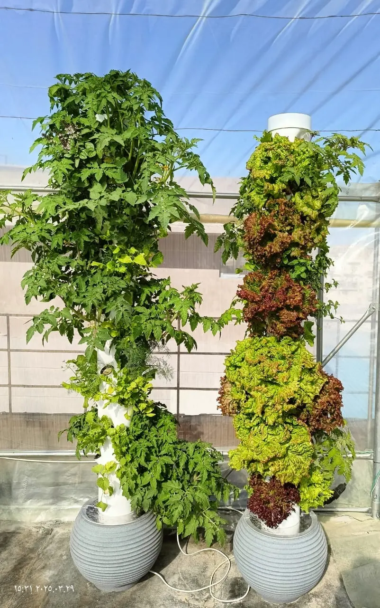
مقارنة بالزراعة التقليدية في التربة؛ تختلف النتائج حسب المحصول وظروف التشغيل.Compared with conventional soil farming; results vary by crop and operating conditions.
في البرج الهوائي تُثبّت النباتات في أكواب على جانبي عمود رأسي، وتبقى جذورها معلّقة في الهواء. مضخة صغيرة يتحكم فيها تايمر ترش الجذور بمحلول مغذٍّ على فترات منتظمة، ثم يعود المحلول إلى الخزان ليُستخدم مرة أخرى.In an aeroponic tower, plants sit in cups along a vertical column with their roots hanging in the air. A small timer-controlled pump mists the roots with a nutrient solution at regular intervals, and the solution flows back to the tank to be reused.

من مكعبات الصوف الصخري إلى فتحات البرج مباشرة.Straight from the rockwool cubes into the tower.
محاليل A-B-C مع جهازي TDS وpH لضبط التركيز والحموضة.A-B-C solutions, checked with the TDS and pH meters.
الري آلي، وأنت تتابع النمو وتحصد في البيت أو المشروع.Irrigation runs itself while you watch it grow and harvest.
البرج وحده، أو الباقة الكاملة بكل ما تحتاجه للبدء.The tower on its own, or the full package with everything you need to start.

2 mالباقة الكاملة: البرج + كل المستلزمات للبدء فوراًFull package: the tower plus everything you need to start
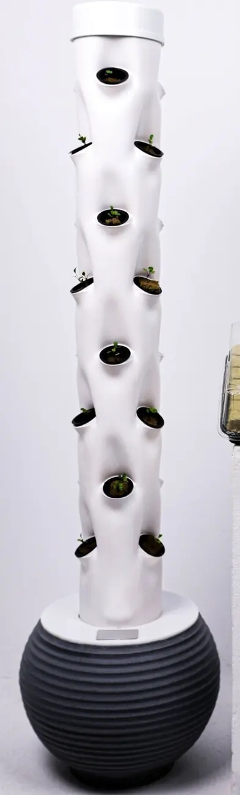
1.5 mالباقة الكاملة: البرج + كل المستلزمات للبدء فوراًFull package: the tower plus everything you need to start
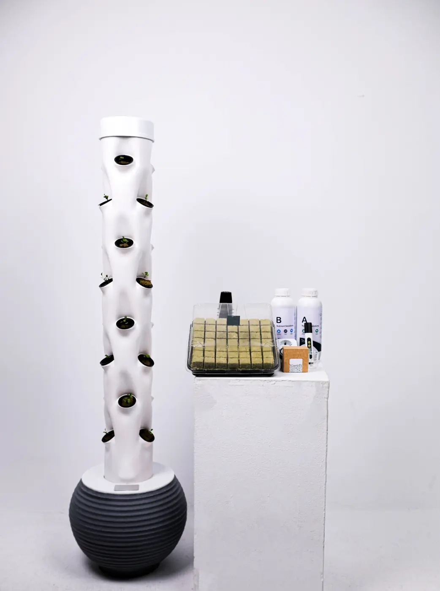

باذنجان أبيض · فلفل أحمر حار · بروكلي · فلفل رومي ألوان · باذنجان رومي · طماطم · طماطم شيري · خيار · كوسةWhite eggplant · hot red pepper · broccoli · coloured bell peppers · eggplant · tomato · cherry tomato · cucumber · zucchini

خس لولو روس أحمر · خس كورتيز أخضر · زعتر · نعناع · كرنب أحمر · سلق أصفر وأحمر · شبت · كزبرة · ريحان إيطالي · جرجير · كرفس · بقدونسRed Lollo Rosso lettuce · green Cortez lettuce · thyme · mint · red cabbage · yellow & red chard · dill · coriander · Italian basil · rocket · celery · parsley
باقة متنوعة تجمع أصنافاً من الثمريات والورقيات لتجربة أكثر من محصول في برجك.A varied pack combining fruiting and leafy varieties so you can try several crops in one tower.
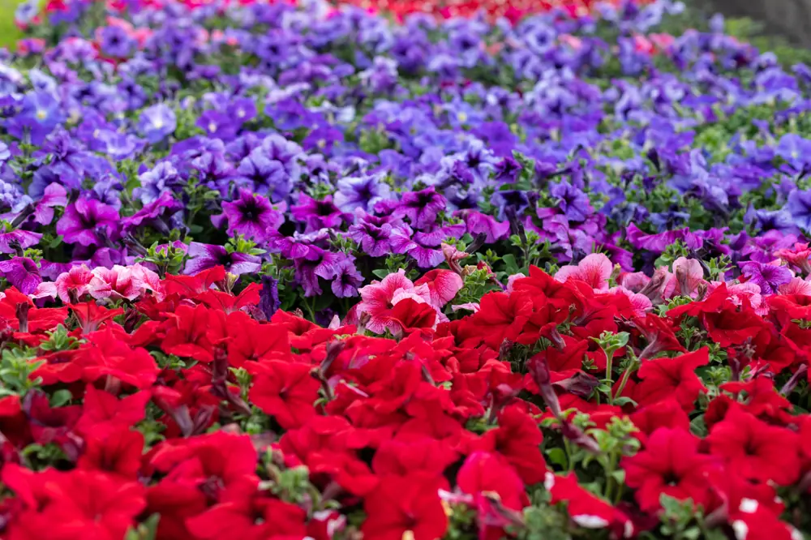
أقحوان · بردقوش · كتان · بيتونيا · هليكريزم · جيبسوفيلاChrysanthemum · marjoram · flax · petunia · helichrysum · gypsophila
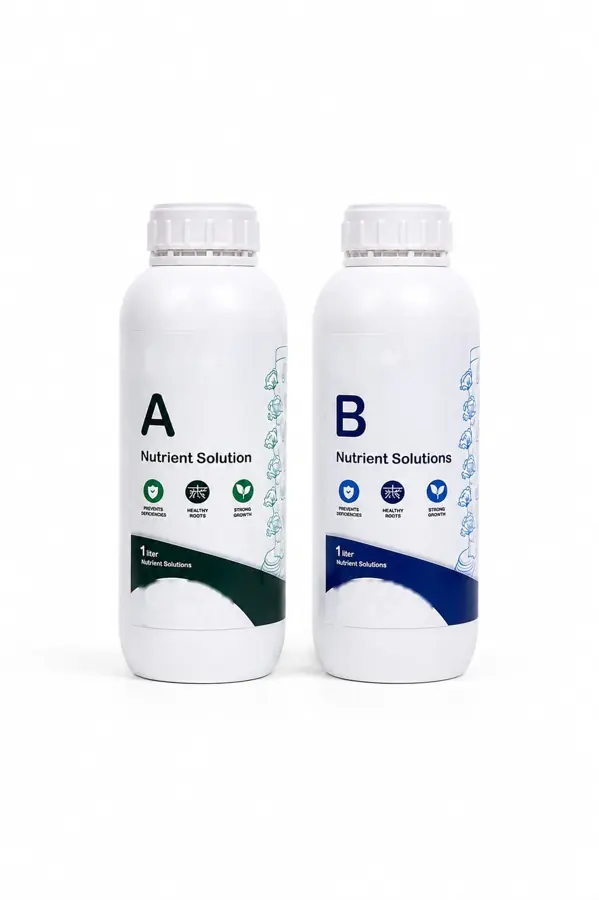
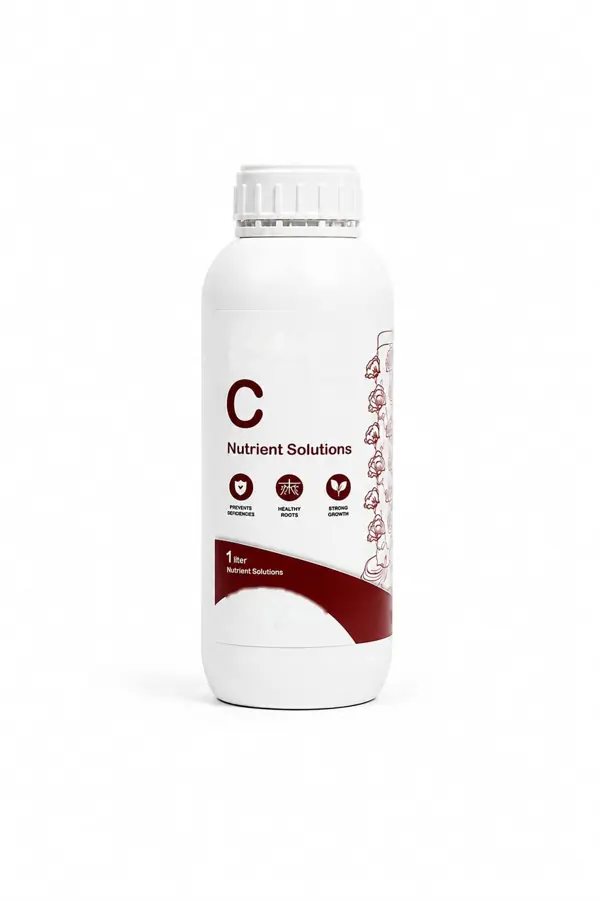
توفر العناصر الغذائية التي يحتاجها النبات خلال مراحل نموه. اختر المجموعة المناسبة.Provide the nutrients plants need at every growth stage. Choose your set.
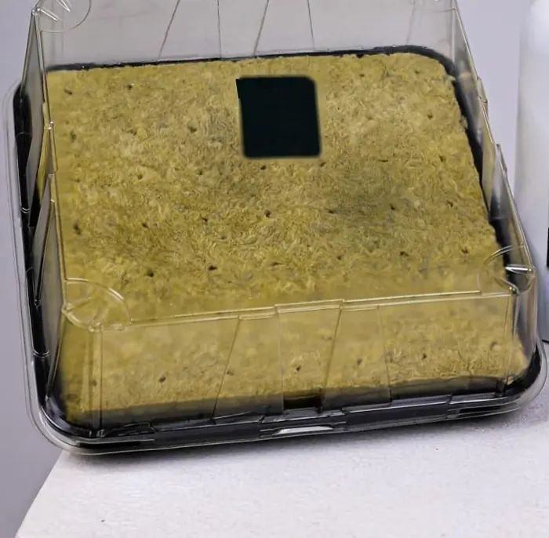
49 مكعب صوف صخري جاهز لبدء الشتلات قبل نقلها إلى البرج.49 ready rockwool cubes to start seedlings before moving them to the tower.
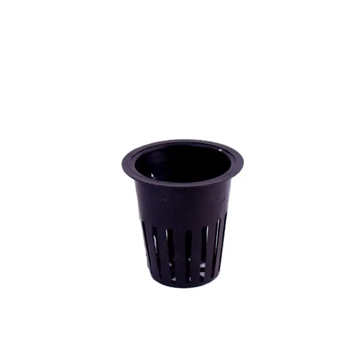
أكواب تثبيت النباتات في فتحات البرج. السعر للكوب الواحد.Cups that hold each plant in the tower. Price per cup.
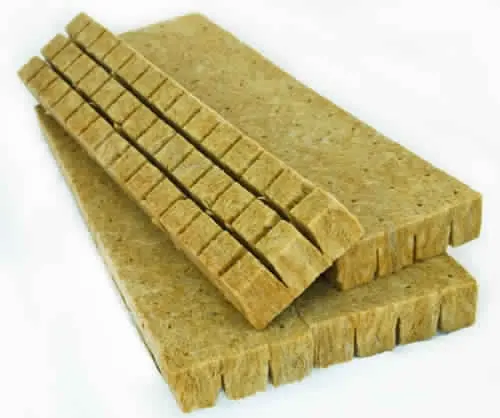
ألواح صوف صخري مقسّمة لزراعة البذور وتجهيز الشتلات بنفسك.Pre-cut rockwool slabs for sowing seeds and raising your own seedlings.
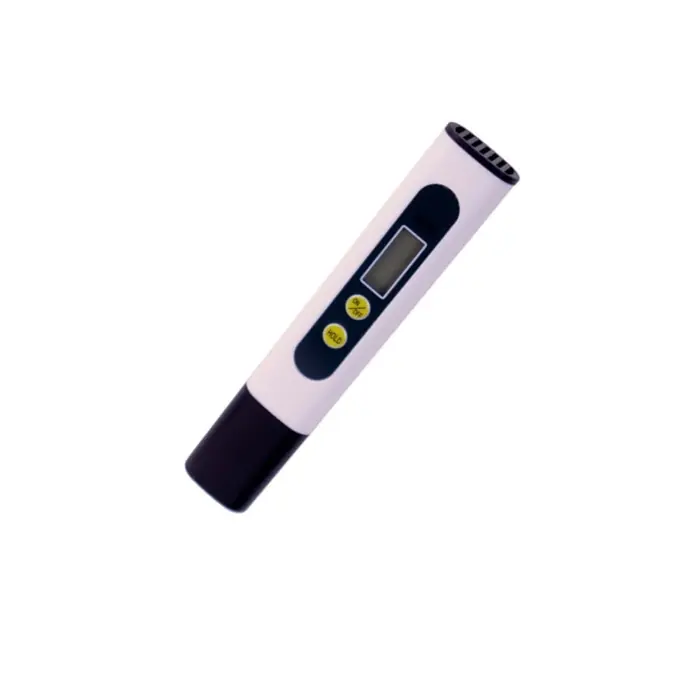
لقياس ملوحة وتركيز المحلول المغذي ومتابعته.Measures the salinity and strength of the nutrient solution.
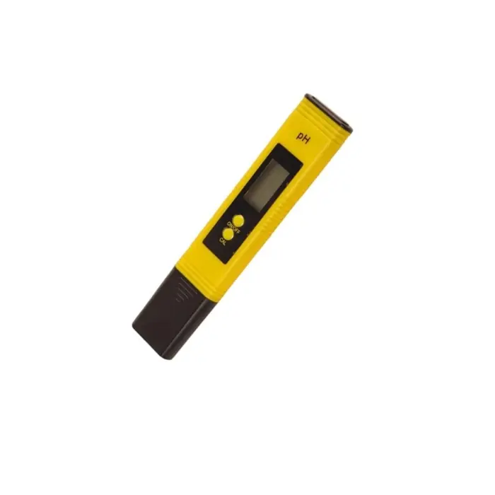
لقياس حموضة المحلول وضبطها في النطاق المناسب.Measures solution acidity and keeps it in the right range.
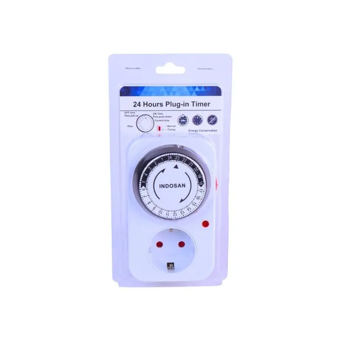
تايمر ٢٤ ساعة لتشغيل دورات الري تلقائياً دون تدخل.A 24-hour plug-in timer that runs irrigation cycles automatically.
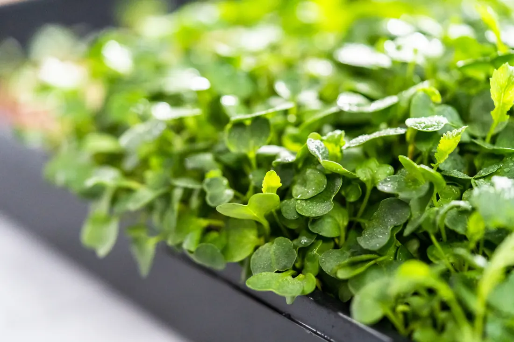
بيتموس + بذور عباد الشمس + بذور الفجل الأحمر. تزرعها على الشباك وتحصدها خلال أيام.Peat moss + sunflower seeds + red radish seeds. Grow on a windowsill and harvest within days.
نصمّم وننفّذ حلول زراعة رأسية تناسب المطاعم والفنادق والمشروعات والمساحات الحضرية المختلفة، من دراسة المساحة إلى التركيب والتشغيل والمتابعة.We design and install vertical-farming solutions for restaurants, hotels, projects and urban spaces, from space assessment to installation, operation and follow-up.
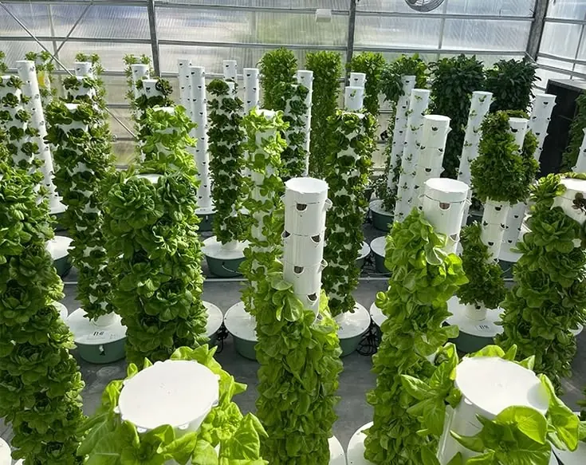
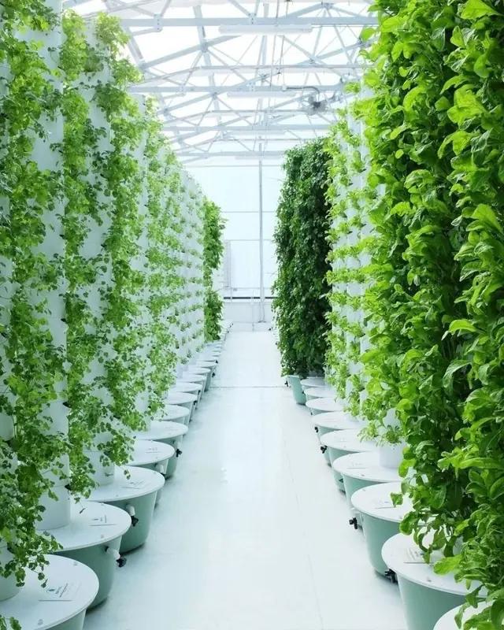
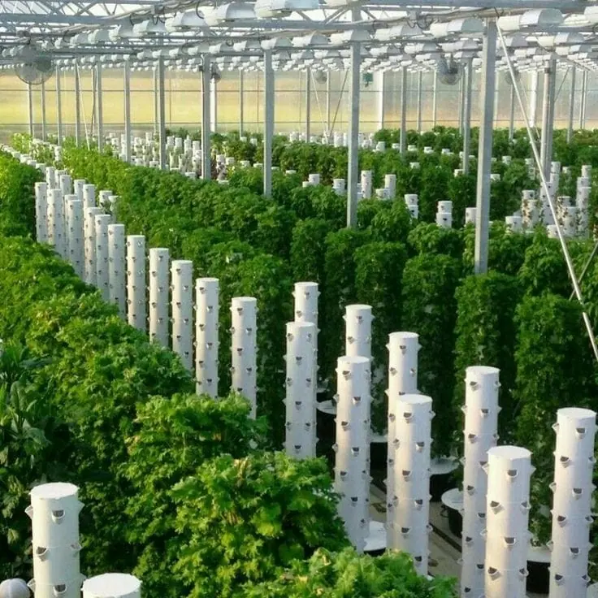
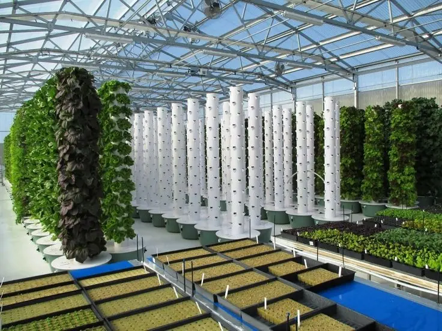
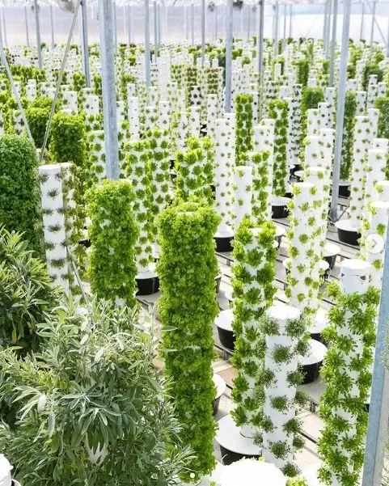
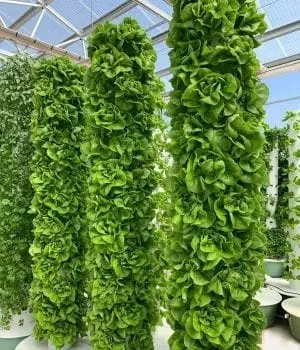
شركة مصرية ذات مسؤولية محدودة من قرية المعدية بمركز إدكو في محافظة البحيرة، نعمل على تصميم وتطوير مزارع حديثة بأنظمة زراعة متقدمة وتقنيات زراعية ذكية.An Egyptian limited liability company from Al-Maadiya village, Idku, Beheira. We design and develop modern farms through advanced growing systems and smart agricultural technologies.
بدأنا من سؤال بسيط: كيف نزرع أكثر بمياه أقل وفي مساحة أصغر؟ ووجدنا الإجابة في الزراعة الهوائية، حيث تنمو النباتات وجذورها في الهواء وتتغذى برذاذ من محلول مغذٍّ يُعاد استخدامه. نقدّم الأبراج الجاهزة والبذور والمحاليل والأدوات للمنازل، ونصمّم حلولاً متكاملة للمطاعم والفنادق والمشروعات.We started from a simple question: how can we grow more with less water and in a smaller space? We found the answer in aeroponics, where plants grow with their roots in the air, fed by a mist of reusable nutrient solution. We supply ready towers, seeds, solutions and tools for homes, and design complete solutions for restaurants, hotels and projects.
زراعة أكثر كفاءة وسهولة واستدامة في كل بيت ومشروع.Farming that is more efficient, accessible and sustainable, in every home and project.
دمج الهندسة الحديثة والتقنيات الذكية لتصميم وبناء وتشغيل بيئات زراعية متطورة.Integrating modern engineering and smart technology to design, build and run advanced growing environments.
توفير الموارد، والبساطة في الاستخدام، والدعم المستمر لعملائنا بعد البيع.Saving resources, simplicity of use, and ongoing support for our customers after sale.
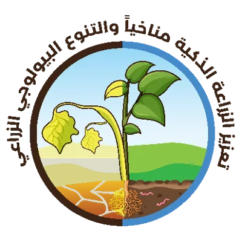
مشروع تعزيز الزراعة الذكية مناخياً والتنوع البيولوجي الزراعي لرفع القدرة على التكيف لدى المجتمعات الريفية الأكثر احتياجاً في الأراضي القديمة والجديدة بصعيد مصر والوجه البحريPromoting Climate Smart Agriculture and Agricultural Biodiversity for Enhancing the Adaptive Capacity of Vulnerable Rural Communities in Old and New Lands of Upper and Lower Egypt
يفتح مثل أي تطبيق، بدون متجر تطبيقات.It opens like any app, with no app store.